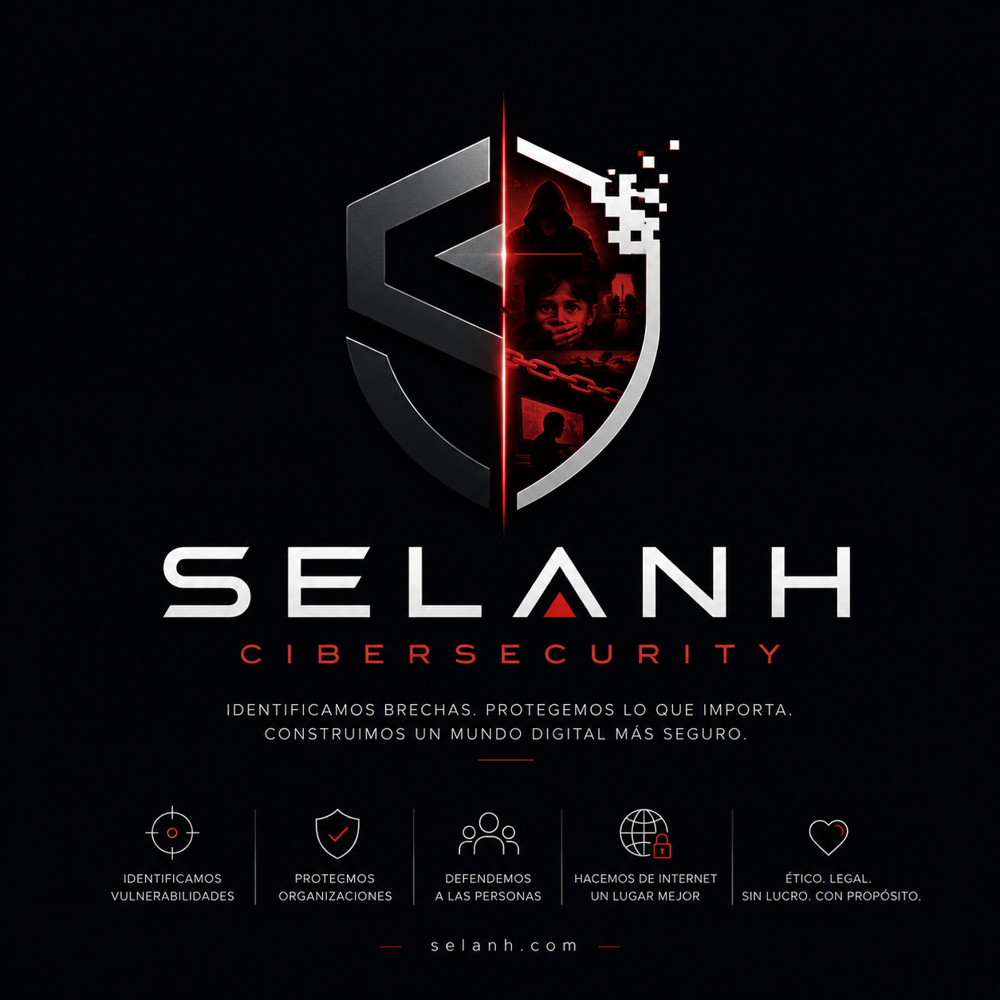

Victor Andre Chiquito ToroEstudiante de Sistemas Inteligentes · Ethical Hacker
$ whoami
Victor Andre Chiquito Toro
Offensive Security Specialist & Bug Bounty Hunter
Ciberseguridad ofensiva enfocada en
Red Team,
Penetration Testing y
Vulnerability Research.
CRTeamer •
eCPPTv3 •
CRTA •
eJPTv2 •
CNSP
$_

01 Sobre mí
Soy Victor Andre Chiquito Toro, estudiante de Sistemas Inteligentes e investigador de
ciberseguridad ofensiva. Mi enfoque se centra en Red Team, Penetration Testing,
Vulnerability Research y Bug Bounty, buscando identificar vulnerabilidades y
reportarlas de manera responsable a las organizaciones afectadas.
A lo largo de mi trayectoria como investigador de seguridad, he tenido la oportunidad de
descubrir y reportar vulnerabilidades en organizaciones y empresas reconocidas
internacionalmente, obteniendo reconocimientos de NASA, Harvard, Lenovo y
Motorola, entre otras.
Mi objetivo es seguir creciendo como investigador de seguridad, afrontar nuevos desafíos
técnicos y contribuir a que los sistemas y tecnologías que utilizamos sean cada vez más
seguros.
02 Habilidades
🛡Ethical Hacking / Pentesting Avanzado🐞Bug Bounty & Vulnerabilidades Avanzado</>HTML & CSS Intermedio⑂Git & GitHub Intermedio🌐Redes y Sistemas Intermedio🤝Trabajo en equipo Avanzado
Conocimientos
03 Proyectos & Reportes de Seguridad
Selección de hallazgos de seguridad reportados de forma responsable (responsible disclosure)
y reconocidos oficialmente por las organizaciones afectadas.
Crítica (P1)Lenovo
Write-up — Vulnerabilidad reportada a Lenovo
Proximamente
Estado: En proceso — Crítica (P1)
Crítica (P1)NASA
Write-up — XSS almacenado con riesgo de account takeover (NASA)
Cross-Site Scripting (XSS) almacenado en uno de los sitios principales de NASA, con
riesgo de secuestro de cuentas (account takeover) para los usuarios expuestos.
Reconocida oficialmente por el equipo de seguridad de NASA.
Estado: Solucionada — Crítica (P1)
Crítica (P1)Motorola
Write-up — XSS almacenado en el carrito de compras (Motorola)
Cross-Site Scripting (XSS) almacenado en el flujo del carrito de compras del sitio
principal de Motorola, con riesgo de engaño a usuarios y robo de datos durante el
proceso de compra. Catalogada como crítica (P1) y solucionada.
Estado: Solucionada — Crítica (P1)
Crítica (P1)Harvard
Write-up — RCE no autenticada en sistema de investigación (Harvard Medical School)
Ejecución remota de código no autenticada (CVSS 9.8) en una interfaz web de investigación
de Harvard Medical School / Brigham and Women's Hospital. Reportada mediante divulgación
responsable y solucionada por el equipo de seguridad.
Estado: Solucionada — Crítica (P1)
04 Contacto
¿Tienes un proyecto, una vulnerabilidad que reportar o quieres contactarme?